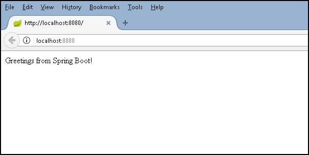
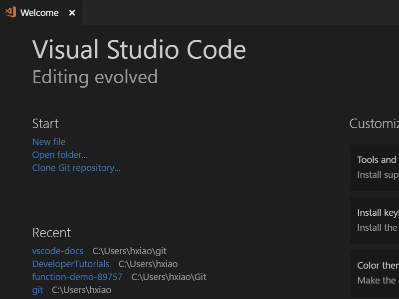
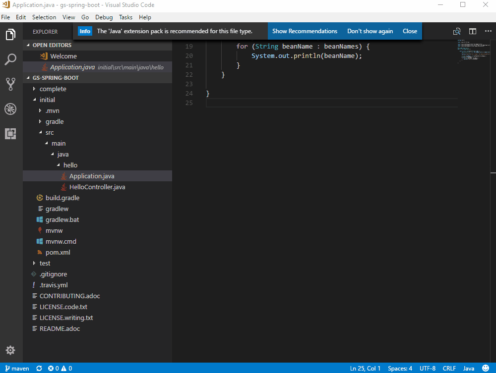
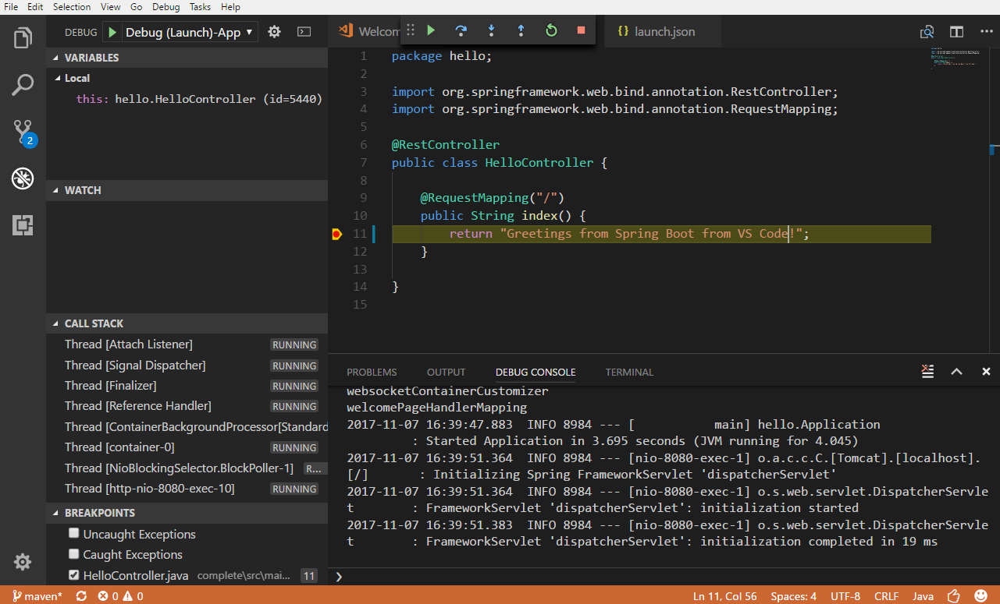
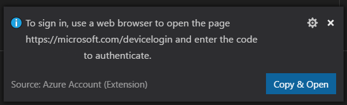
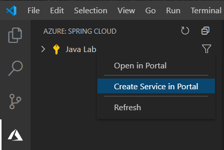
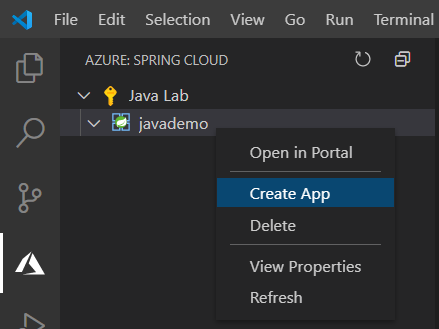
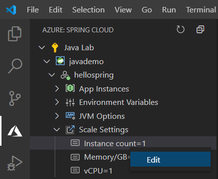
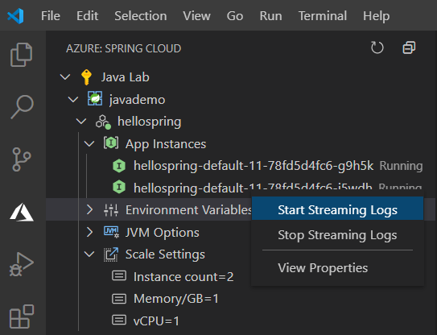

Java on Azure Spring Cloud
This tutorial shows you how to create a Java web application with Visual Studio Code. You'll learn how to run, debug, and edit the Java web app locally and then on a fully managed Microservices platform built for Java workloads: Azure Spring Cloud.
Scenario
We will deploy a simple Spring Boot Getting Started web app to Azure Spring Cloud.
Azure Spring Cloud makes it easy to deploy Spring Boot microservice applications to Azure without any code changes. The service manages the infrastructure of Spring Cloud applications so developers can focus on their code. Other benefits include:
- Efficiently migrate existing Spring apps and manage cloud scaling and costs.
- Modernize apps with Spring Cloud patterns to improve agility and speed of delivery.
- Run Java at cloud scale and drive higher usage without complicated infrastructure.
- Develop and deploy rapidly without containerization dependencies.
- Monitor production workloads efficiently and effortlessly.

Before you begin
Before running and deploying this sample, you must have the Java SE Development Kit (JDK) version 11 or above and Apache Maven build tools on your local development environment. If you don't already have them, install these tools first.
Download and install the Java Extension Pack.
Note: The
JAVA_HOMEenvironment variable must be set to the install location of the JDK to complete this tutorial.
Download Apache Maven version 3 or greater:
Install Apache Maven for your local development environment:
Download and test the Spring Boot app
Clone the Spring Boot Getting Started sample project to your local machine. You can clone a Git repository with the Git: Clone command in the Command Palette (kb(workbench.action.showCommands)). Paste https://github.com/spring-guides/gs-spring-boot.git as the URL of the remote repository and then decide the parent directory under which to put the local repository. After that, open the complete folder within the cloned repository in VS Code by navigating to the folder and typing code ..
Note: You can install Visual Studio Code from https://code.visualstudio.com and Git from https://git-scm.com.

From within VS Code, open any of the Java files within the complete folder (for example src\main\java\hello\Application.java). If you don't have the Java language extensions installed for VS Code, you will be prompted to install the Microsoft Java Extension Pack. Follow the instructions and reload VS Code after the installation.

Once you have the Java Extension Pack installed, it will automatically build the project for you (the build may take several minutes). You can run the application within VS Code by pressing kb(workbench.action.debug.start) and selecting the Java environment. The Java Debug extension will generate a debugging configuration file launch.json for you under a .vscode folder in your project. You can see build progress in the VS Code Status bar and when everything is finished, the final active debug configuration is displayed.
You can learn more about how VS Code launches your application in Debugging Launch Configurations. Press kb(workbench.action.debug.start) again to launch the debugger.
Test the web app by browsing to http://localhost:8080 using a web browser. You should see the following message displayed: "Greetings from Spring Boot!".
Make a change
Let's now edit HelloController.java to change "Greetings from Spring Boot!" to something else like "Hello World". VS Code provides a great editing experience for Java, check out Editing and Navigating Code to learn about VS Code's editing and code navigation features.
Select the Restart button on the top of the editor to relaunch the app and see result by reloading the browser.

Debug the application
Set a breakpoint (kb(editor.debug.action.toggleBreakpoint)) in the application source code, and reload your browser to hit the breakpoint.

If you would like to learn more about debugging Java with VS Code, you can read Java Debugging.
Congratulations, you have your first Spring Boot web app running locally! Read on to learn how to host it in the cloud.
Deploy to Azure Spring Cloud
We just built a Java web application and ran it locally. Now you will learn how to deploy from Visual Studio Code and run it on Azure Spring Cloud.
Install the Azure Spring Cloud extension
The Azure Spring Cloud extension is used to create, manage, and deploy to Azure Spring Cloud with key features including:
- Create/View/Delete apps in Azure Spring Cloud
- Deploy Jar to the app
- Access the app with public/private endpoint
- Start, stop, and restart the app
- Scale the app in/out, up/down
- Config application settings such as environment variables and JVM options
- Stream logs from the app
To install the Azure Spring Cloud extension, open the Extensions view (kb(workbench.view.extensions)) and search for azure spring cloud to filter the results. Select the Microsoft Azure Spring Cloud extension. For a command-line experience, you can also check out the Azure Spring Cloud quickstart with Azure CLI.
Sign in to your Azure subscription
The deploy process uses the Azure Account extension (installed along with the Spring Cloud extension as a dependency) and you need to sign in with your Azure subscription.
If you don't have an Azure subscription, you can sign up for a free Azure account.
Create your free Azure account
To sign in to Azure, run Azure: Sign In from the Command Palette (kb(workbench.action.showCommands)). You can then sign in to your account using the Device Login flow. Select Copy & Open to open your default browser.

Paste in the access code and continue the sign in process.
Create an app on Azure Spring Cloud
Once you are signed in to your Azure account and you have your app open in Visual Studio Code, select the Azure icon in the Activity Bar to open the Azure Explorer and you will see the Azure Spring Cloud panel.
Right-click on your subscription and select Create Service in Portal. Finish the following steps on the Azure Portal to create an Azure Spring Cloud service instance.

After the service instance is created, refresh the Azure Explorer to display the new service instance. Right-click on the service instance and select Create App. Type the app name, select the Java version, and then press
kbstyle(Enter)to start creating. The app will be ready in a few minutes.
Build and deploy the app
You can open the command prompt or terminal window and build the project using Maven commands. The build will generate a new war or jar artifact in the target directory.
mvn clean package
Right-click on the App in Azure Explorer, select Deploy, and pick your built Jar file when prompted.

You can watch the deployment status on the bottom right. Once done, select Access Public Endpoint to test the app running on Azure and Yes when prompted to assign a public endpoint. Be aware that only Spring Boot fat Jar is supported, learn more about apps on Azure Spring Cloud.

Scale the app
You can easily scale the app by right-clicking on the Instance count under Scale Settings and selecting Edit. Type "2" and press
kbstyle(Enter)to scale the app.
Stream your application logs
Expand the App Instances node, right-click the instance you want to see logs, and select Start Streaming Logs.

The Visual Studio Code output window opens with a connection to the log stream.

Next steps
- Explore more powerful features of Azure Spring Cloud with Microservices.
- To learn more about Java Debugging features, read the Java Debugging Tutorial.